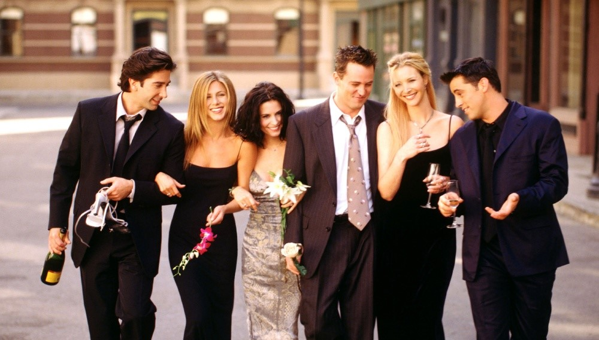

Article heading
Ross Geller
Herec:
David Schwimmer
David Schwimmer (* 2. november 1966, New York, New York, USA) je americký herec a režisér nominovaný na cenu Emmy.
Filmy a televízne relácie:
- Priatelia (1994 - 2004)
- American Crime Story (od 2016)
- The Wonder Years (1988 - 1993)
- Bratstvo Neohrozených (2001)
Rachel Green
Herečka:
Jennifer Aniston
Jennifer Joanna Anistonová (* 11. február 1969, Sherman Oaks, Kalifornia, USA) je americká herečka, producentka a režisérka.
Filmy a televízne relácie:
- Priatelia (1994 - 2004)
- My sme Millerovci (2013)
- Lov na exmanželku (2010)
- Marley a ja (2008)
Monica Geller
Herečka:
Courteney Cox
Courteney Bass Cox (* 15. jún 1964, Birmingham, Spojené štáty) je americká filmová a televízna herečka.
Filmy a televízne relácie:
- Priatelia (1994 - 2004)
- Vreskot (1996)
- Vreskot 3 (2000)
- Mesto žien (2009 – 2015)

Chandler Bing
Herec:
Matthew Perry
Matthew Langford Perry (* 19. august 1969, Williamstown, Massachusetts, USA) je kanadsko-americký herec a komik nominovaný na cenu Emmy a Golden Globe.
Filmy a televízne relácie:
- Priatelia (1994 – 2004)
- Znovu 17 (2009)
- Správna dvojka (2015 – 2017)
- Iba blázni sa ponáhľajú (1997)
Phoebe Buffay
Herečka:
Lisa Kudrow
Lisa Kudrow (* 30. júl 1963, Los Angeles, Kalifornia, Spojené štáty) je americká herečka, dabérka, komička a spisovateľka.
Filmy a televízne relácie:
- Priatelia (1994 - 2004)
- The Comeback (od 2005)
- BoJack Horseman (od 2014)
- Romy a Mišel (1997)
Joey Tribbiani
Herec:
Matt LeBlanc
Matthew Steven LeBlanc (* 25. júl 1967, Newton, Massachusetts, USA) je americký herec, televízny moderátor a komik.
Filmy a televízne relácie:
- Priatelia (1994 - 2004)
- Joey (2004 – 2006)
- Top Gear (od 2002)
- Man with a Plan (od 2016)